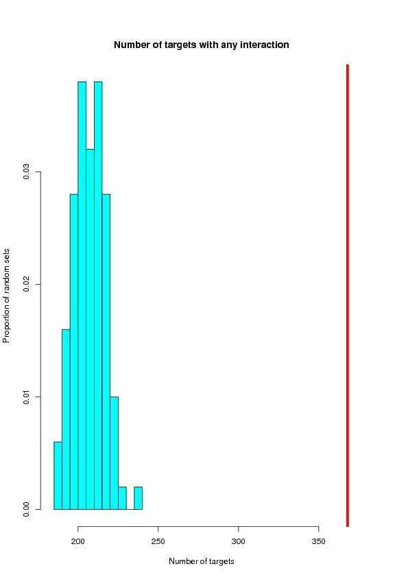
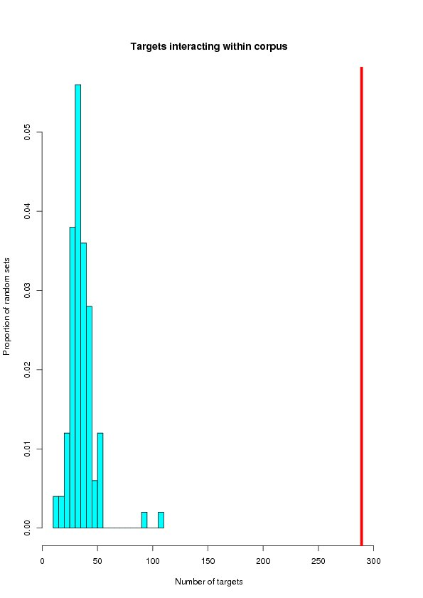
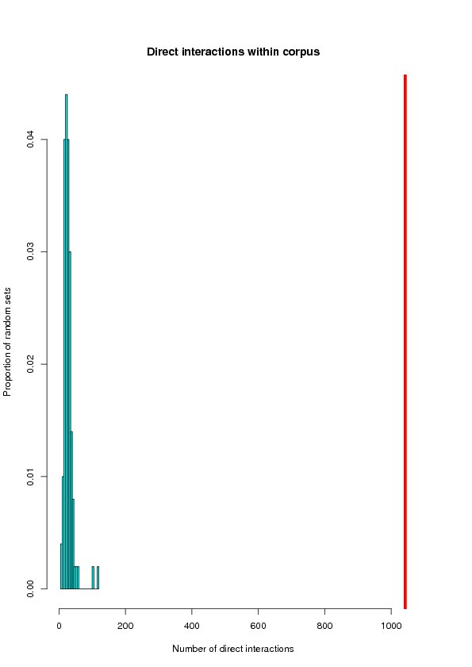
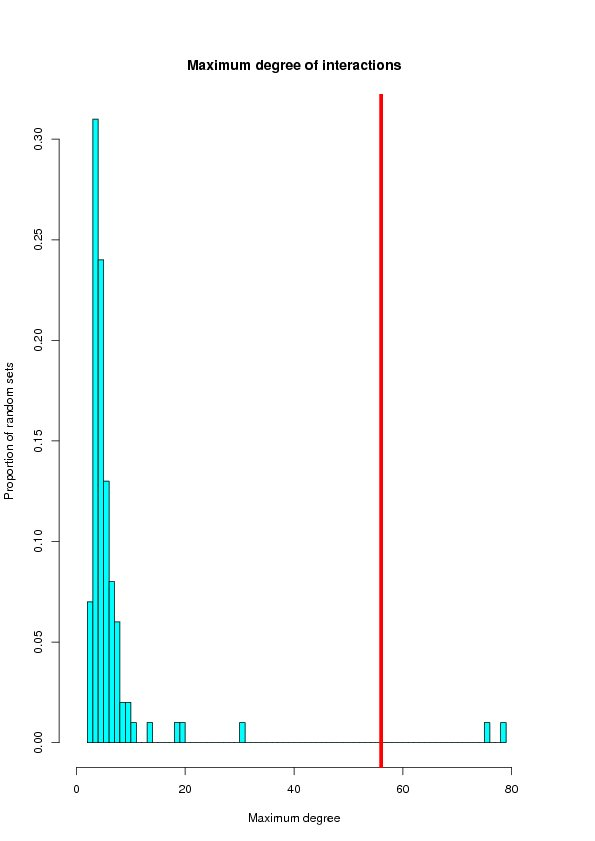

The following table summarizes the targets (from the tested set) that were used in this PPI network analysis. Background set is the source of the target frequency information for random network generation. For more detail, refer to the Network Significance Test below.
| Corpus size | # of targets (total) | # of targets (used) | |
|---|---|---|---|
| Tested set | 172 | 399 | 399 |
| Background set | 25254 | 25254 |
Interaction Network Within Corpus (sorted by degree)
[TABLE] Here is a summary table of the Protein-Protein Interaction network data of the test set. This table basically shows how many targets are interacting each other within the test set.
| Num of PMIDs | 172 |
|---|---|
| Num of genes (total) | 399 |
| Num of genes (used) | 399 |
| Num of targets with any interaction | 368 |
| Num of targets interacting within corpus | 289 |
| Num of direct interaction within corpus | 1042 |
| Maximum degree target | MYC (Degree = 56) |
| Minimum degree target | PRPF3 (Degree = 1) |
[TABLE] Top 10 interacting targets within the test set
| Rank | Target Symbol | Num of Direct Interactions | MiMI Network |
|---|---|---|---|
| 1 | MYC | 56 |  |
| 2 | TP53 | 48 | |
| 3 | JUN | 46 | |
| 4 | CASP3 | 32 | |
| 5 | MAPK1 | 31 | |
| 6 | BCL2 | 30 | |
| 7 | NFKB1 | 29 | |
| 8 | ATF2 | 29 | |
| 9 | MAPK3 | 27 | |
| 10 | MAPK8 | 25 | |
| View your full list in a TEXT or EXCEL file. |
|
View the full merged network in cytoscape SIF (MiMI Network File). This file has to be downloaded first and imported into a Cytoscape program. |
Network Significance Test (100 iteration of random genes with size of 399 from total of 25254 genes)
This Network Significance Test section will test the integrity of the Protein-Protein Interaction network among the test set targets. This is based on the assumption that targets commonly related to a certain topic will be more likely to have frequent protein-protein interaction with each others. Therefore, if a set of targets identified by text-mining (SciMiner) from a certain query have more frequent direct interactions among the targets compared to randomly generated sets, it can, in part, support the validity of using text-mining method to identify related targets from a set of related papers. 100 random network of the same number of target in the test set will be generated from the background set. The test set had 399 targets. Thus 399 are randomly selected from the background which had a total of 25254 targets. If the background set was full HUGO set, all the targets will have an equal chance of being selected. If the background set was either Selected background above or Whole document in SciMinerDB, the probability of each target begin selected is determined by the observed frequency of each target as in (# of papers with the target / # of all papers).Two statistical measures are given below; standard Z-test and one-sample T-test.
| Targets with any interaction | Targets interacting within corpus | Direct interactions within corpus | Max degree | |
|---|---|---|---|---|
| Tested | 368 | 289 | 1042 | 56 |
| Mean | 206.56 | 34.91 | 27.18 | 6.35 |
| STDEV | 9.41 | 12.46 | 14.51 | 10.74 |
| Z-Score | 17.2 | 20.4 | 69.9 | 4.6 |
| P-value(Z) | 0.0e+00 (0.000) | 0.0e+00 (0.000) | 0.0e+00 (0.000) | 1.9e-06 (0.000) |
| T-Stat | -171.6 | -203.9 | -699.5 | -46.2 |
| P-value(T) | 2.5e-124 (0.000) | 9.9e-132 (0.000) | 1.1e-184 (0.000) | 7.9e-69 (0.000) |
Distrubution of randomly generated networks
This section will histograms of the random network samples. Red bars represent the targets from the tested set (target query) being tested.    
Back to top
Targets with any interaction
Targets interacting within corpus
Direct interactions within corpus
Max degree
{kind=link}
{kind=link}
{kind=link}
{kind=link}